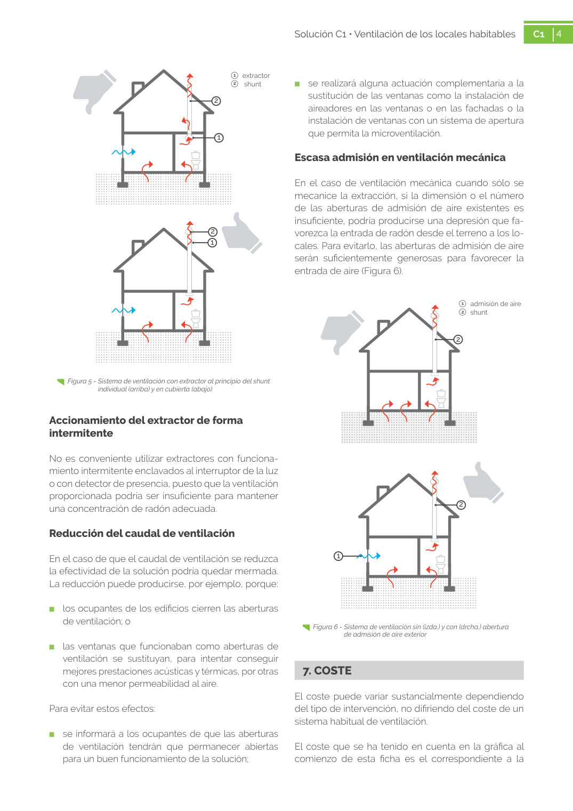

GUIA · 7. COSTE · versión sin-fecha · capa guia
Formatos: JSON compacto · Markdown · PDF fuente
Ámbito del documento · texto del ámbito · documento y tablas
Tipo: tablas, figuras · nivel 1 · sección estimada: 7. COSTE · padre:
7. COSTE El coste puede variar sustancialmente dependiendo del tipo de intervención, no difiriendo del coste de un sistema habitual de ventilación. El coste que se ha tenido en cuenta en la gráfica al comienzo de esta ficha es el correspondiente a la 5 Solución C1 • Ventilación de los locales habitables C1 5 instalación de un sistema de ventilación completo nuevo, para representar el caso más costoso.

PDF fuente redistribuible: copia fiel enlazada en esta página (SHA256 verificado).